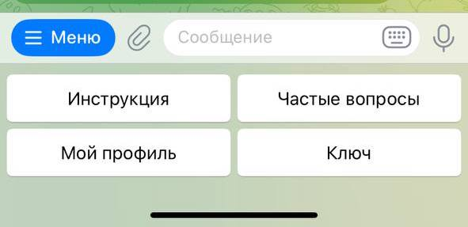

На этой странице вы найдёте пошаговую инструкцию по использованию нашего Telegram-бота. Следуя простым рекомендациям, вы сможете быстро подключиться, управлять подпиской и безопасно использовать все функции VPN.
👋 Приветствуем вас в руководстве пользователя бота Liberty Guard!
Здесь вы найдете подробное описание всех возможностей и команд, чтобы легко освоиться с нашим сервисом. При первом запуске вы получаете 20 приветственных звёзд, чтобы сразу попробовать VPN без ограничений. 🚀
1. Основные команды
Бот предоставляет удобный набор команд, с помощью которых вы сможете быстро управлять своим VPN и получать нужную информацию.
Быстрй доступ к функционалу бота дсоутпен в разеделе "Меню" слева от строки ввода сообщения
/start – перезапуск бота. Используйте эту команду, если хотите вернуться к началу взаимодействия с ботом или обновить состояние сессии.
/instruction – инструкция по использованию. Команда выводит подробное руководство по установке и настройке VPN на вашем устройстве.
/faq – частые вопросы. Здесь вы найдете ответы на самые популярные вопросы пользователей и советы по решению возможных проблем.
/my_profile – информация о вашем профиле. С помощью этой команды можно быстро проверить статус подписки, баланс и другую персональную информацию.
</key – информация о ключе доступа. Команда показывает детали вашего ключа VPN и позволяет убедиться, что он активен и привязан к вашим устройствам./p>
Самые полезные запросы добавлены в кнопки навигации в разеделе "Кнопки" справа от строки ввода сообщения.
2. Получить ключ
- Перейдите в профиль пользователя нажав на кнопку "Мой профиль" или воспользуйте командой /my_profile.
- Нажмите на кнопку "Ключ подключения". Если у вас нет активной подписки, тогда нажмите на кноку "Продлить подписку".
- Скопируйте ключ активации или ссылку для подключения в зависимости от используемого приложения на вашем устройстве.
3. Продлить подписку
Если у вас нет действующей подписки или срок вашей подписки истекает:
- Перейдите в профиль пользователя нажав на кнопку "Мой профиль" или воспользуйте командой /my_profile.
- Нажмите на кнопку "Продлить подписку".
- Выберите нужное количество дней продления вашей подписки. Дни добавятся к дате окончания подписки.
4. Пополнить баланс
Если на вашем балансе нехватает звезд для продления подписки:
- Нажмите на кнопку "Пополнить баланс".
- Выберите нужное количество звезд для пополнения.
- Нажмите на кнопку оплатить.